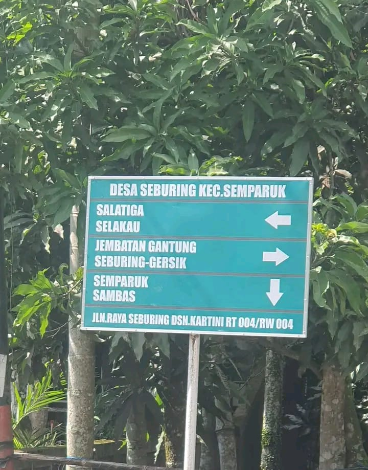

Perjalanan dan perkembangan Desa Seburing Hilir

SEJARAH
Desa Seburing Hilir memiliki perjalanan sejarah yang menjadi bagian dari perkembangan masyarakat di wilayahnya.
Dari waktu ke waktu, kehidupan masyarakat mengalami berbagai perkembangan. Pembangunan infrastruktur, pendidikan, kegiatan sosial, dan perekonomian terus berkembang sesuai dengan kebutuhan masyarakat.
Semangat kebersamaan dan gotong royong menjadi salah satu bagian penting dalam kehidupan masyarakat desa.
Masyarakat mulai membangun kehidupan bersama dan mengembangkan lingkungan desa.
Kegiatan sosial, pendidikan, dan ekonomi masyarakat semakin berkembang.
Pembangunan berbagai fasilitas dilakukan untuk mendukung kebutuhan masyarakat.
Desa terus berkembang dengan memanfaatkan potensi dan sumber daya yang dimiliki.